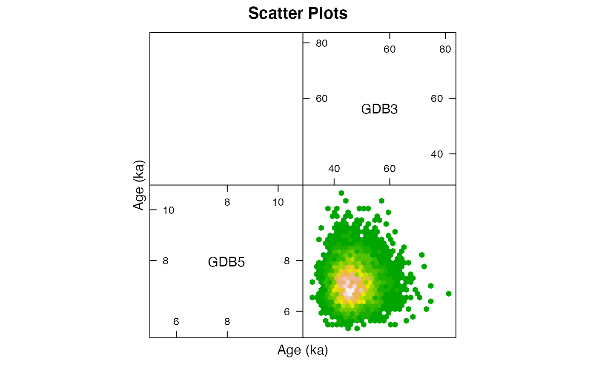
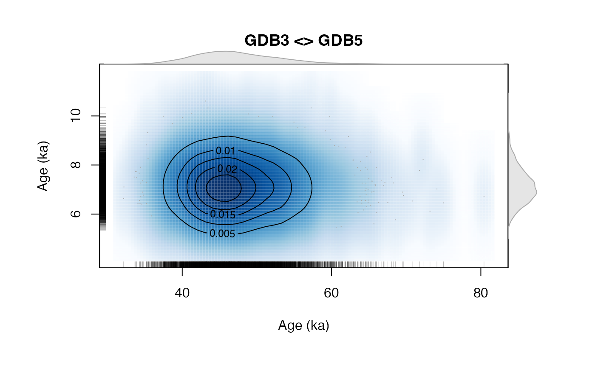

Display Scatter Plot Matrix of the Bayesian Age Results
plot_Scatterplots.RdCreate a hexbin plot matrix (hexbin::hexplom) of age results returned by the bayesian age calculation.
plot_Scatterplots(object, variables = c("A"), sample_names = NULL, sample_selection = NULL, n.chains = NULL, plot_type = "hexbin", plot_mode = "matrix", ...) ScatterSamples(...)
Arguments
| object | coda::mcmc.list or a data.frame (required): mcmc list objects generated by rjags::jags.model in AgeS_Computation,
AgeC14_Computation or Age_OSLC14. If a data.frame is provided, only the first two columns are taken and |
|---|---|
| variables | character (with default): variable to be selected for the scatter plot, e.g., |
| sample_names | character (optional): sample names shown in the plot matrix |
| sample_selection | numeric (with default): vector of samples to be plotted in the scatter matrix, e.g.,
|
| n.chains | integer (with default): allows to limit the number of chains shown, by default the results of all chains are plotted. |
| plot_type | character (with default): switch between different plot types, |
| plot_mode | character (with default): switch between a |
| ... | further arguments to control the plot output, standard plot arguments supported are |
Value
A scatter plot based on hexbin::hexplom
Details
Addtional supported plot arguments
The following table lists additional arguments supported by the function in order to fine tune the
graphical output. Such arguments, can just be added in the function call. Example, for disabling
the graphics::rug in the plot mode smoothScatter you can type plot_Scatterplots(..., rug = FALSE)
Please note that not all arguments are supported by all plot types.
| ARGUMENT | ||
| SUPPORTED BY PLOT TYPE | ||
| DESCRIPTION | ||
colramp | ||
hexbin | and | |
smoothScatter | Option to define an own colour ramp, by defining an own function, e.g., | |
function(n) heat.colors(n, alpha = 1) | . | |
pscales | ||
hexbin | and | smoothScatter |
| Controls the number of ticks shown on the plot axes, please note that the number works proportionally. | ||
bw_smoothScatter | ||
smoothScatter | Controls the bandwith of the smooth scatter, cf. | |
| graphics::smoothScatter | ||
rug | ||
smoothScatter | enables/disables rugs | |
nlevels | ||
smoothScatter | ||
| controls the number of isolines shown (cf. | graphics::contour | ) |
nrpoints | ||
smoothScatter | ||
| defines the number of | nrpoints | to be plotted |
| graphics::smoothScatter | ||
col_contour | ||
smoothScatter | defines the colour of the contour lines | |
col_nrpoints | ||
smoothScatter | ||
| sets colour of the nrpoints in the scatter plot |
Function version
0.3.0
See also
Age_Computation, AgeS_Computation, AgeC14_Computation, and rjags packages.
Examples
data(AgeS,envir = environment()) ##hexbin plot_Scatterplots( object = AgeS$Sampling, sample_names = c("GDB5", "GDB3"), sample_selection = c(1,2) )##scatter smooth (matrix) plot_Scatterplots( object = AgeS$Sampling, sample_names = c("GDB5", "GDB3"), sample_selection = c(1,2), plot_type = "smoothScatter")##scatter smooth (single) plot_Scatterplots( object = AgeS$Sampling, sample_names = c("GDB5", "GDB3"), sample_selection = c(1,2), plot_type = "smoothScatter", plot_mode = "single")